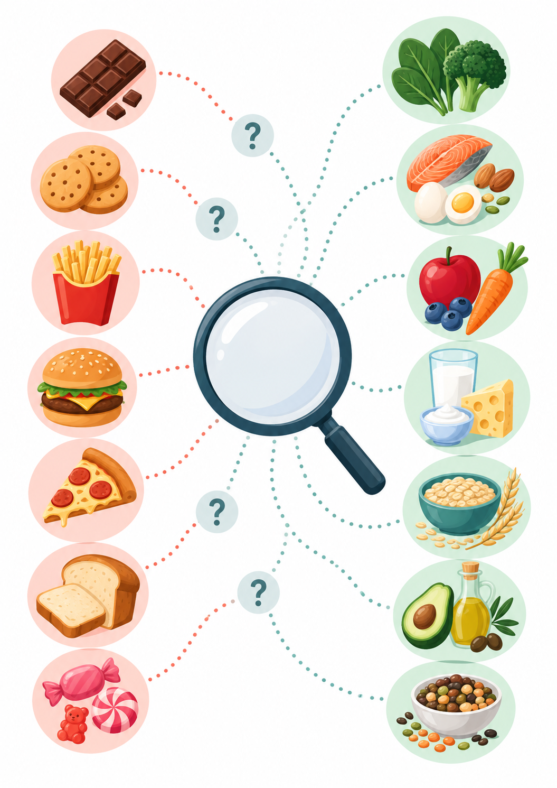
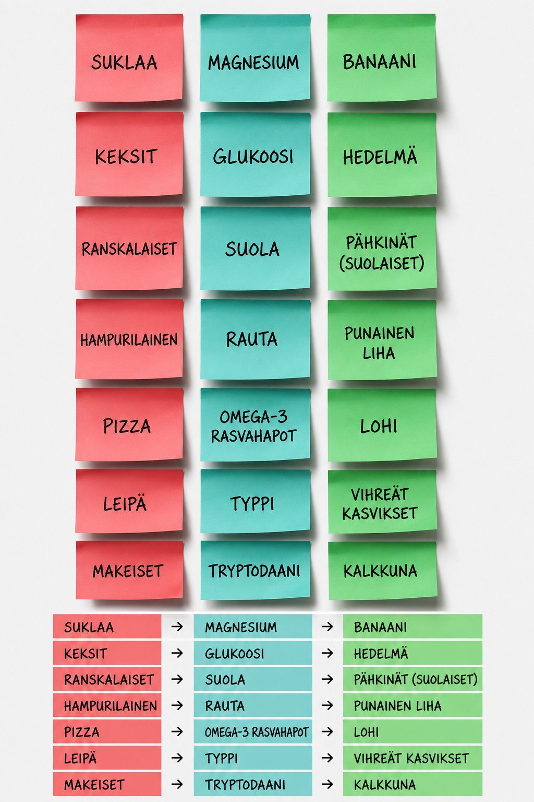

Kaksi kuvaa, yksi tulkintaperiaate


Seitsemän päivän kartoitus
-
Kirjaa tilanne silloin, kun himo alkaa
Merkitse kellonaika, haluttu ruoka, voimakkuus, edellinen ateria, päivän harjoitus ja sen kesto. Lisää lyhyesti uni, stressi, nälkä sekä mahdolliset vatsaoireet. Tarkoitus ei ole laskea jokaista suupalaa, vaan löytää toistuva rakenne.
-
Vertaa himoa harjoituskuormaan
Katso kasaantuuko ilmiö pitkien harjoitusten, kahden harjoituksen päivien, energiavajeen, kuumuuden tai kilpailumatkojen yhteyteen. Jos himo ilmestyy samoissa olosuhteissa, ruokavalion ajoitus voi olla tärkeämpi kuin yksittäinen ravintoaine.
-
Tarkista päivän perusrakenne
Arvioi pääaterioiden määrä, välipalat, hiilihydraattien sijoittuminen harjoituksen ympärille, proteiinin jakautuminen päivän aterioille, rasvan riittävyys ja juominen. Tarve muuttuu kevyen, kovan ja palauttavan päivän välillä.
-
Muuta yksi asia kerrallaan
Valitse havaintoon sopiva muutos 7–14 päiväksi. Pidä muu ruokailu mahdollisimman vakaana. Näin nähdään, liittyikö muutos himoon, harjoitusvireeseen ja palautumiseen vai tarvitaanko uusi hypoteesi.
-
Arvioi tulos suorituskyvyn kautta
Seuraa mieliteon lisäksi harjoituksen laatua, koettua kuormitusta, unen laatua, palautumista, mielialaa, vatsan toimintaa ja mahdollisia vammoja. Hyvä muutos tukee kokonaisuutta eikä ainoastaan poista yhtä mielitekoa.
Ensimmäisen sivun havainnot muutetaan näin kokeiluiksi
Makeanhimo
Tarkista energiansaanti, ateriavälit ja harjoituksen ympärille sijoittuva syöminen.
Hiilihydraattien kaipuu
Vertaa hiilihydraattien määrää ja ajoitusta harjoituskuormaan sekä palautumiseen.
Suolaisen halu
Tarkista harjoituksen kesto, kuumuus, hikoilu, juotu määrä ja harjoituksen aikainen painonmuutos.
Jään pureskelu
Älä käsittele sitä tavallisena ruokakokeiluna, vaan hakeudu tarvittaessa terveydenhuollon arvioon.
Havainto ja ensimmäinen hallittu muutos
| Havainto | Tarkista | Hallittu muutos |
|---|---|---|
| Makeanhimo illalla | Aamiainen, lounas, harjoitusta edeltävä syöminen ja palautumisateria. | Lisää harjoituksen ympärille hiilihydraattia ja proteiinia sisältävä välipala. Pidä pääateriat säännöllisinä viikon ajan. |
| Pastan tai leivän voimakas halu | Päivän kokonaisenergia, hiilihydraattien määrä ja edeltävien päivien harjoituskuorma. | Kasvata hiilihydraattiosuutta kovina harjoituspäivinä ja sijoita osa ennen harjoitusta sekä palautumiseen. |
| Suolainen ruoka pitkän harjoituksen jälkeen | Harjoituksen kesto, kuumuus, hikoilu, juotu määrä ja painonmuutos. | Rakenna toistuvien mittausten perusteella henkilökohtainen nesteytyssuunnitelma. Vältä sekä liian vähäistä että liiallista juomista. |
| Jatkuva jään pureskelu | Väsymys, suorituskyky, hengästyminen, ruokavalio, kuukautiset ja aikaisemmat rauta-arvot. | Hakeudu terveydenhuollon arvioon. Älä aloita suurta rauta-annosta ennen tutkimuksia ja syyn selvittämistä. |
| Napostelun tarve levottomana tai väsyneenä | Uni, stressi, palautumispäivät, ruokarajoitukset ja aterioiden kylläisyys. | Vakioi unirytmi ja ateriat ennen kuin tulkitset tilanteen ravintoainepuutokseksi. |
Mitä seurannasta etsitään?
- väheneekö himon voimakkuus tai toistuvuus
- paraneeko harjoituksen aikainen vire
- paraneeko palautuminen seuraavaan harjoitukseen
- vakautuuko nälkä päivän aikana
- paraneeko uni tai keskittyminen
- väheneekö tarve hallitsemattomaan iltanaposteluun
Milloin oma kokeilu ei riitä?
Urheilulääkärin tai urheiluravitsemukseen perehtyneen ravitsemusterapeutin arvio on perusteltu, kun suorituskyky laskee useita viikkoja, paino muuttuu tahattomasti, kuukautiskierto häiriintyy, sairastelu tai rasitusvammat lisääntyvät, syömiseen liittyy pakonomaisuutta tai jään pureskelu jatkuu.